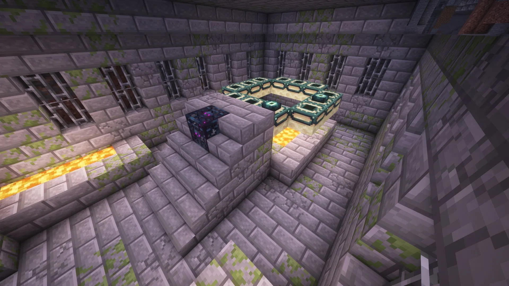

Structures

The Stronghold is one of the rarest and most important structures in Minecraft, hidden deep beneath the Overworld. Built from stone bricks and filled with twisting hallways, staircases, libraries, prison cells, and hidden chambers, Strongholds are designed to feel mysterious and ancient. Players often spend a long time searching for them using Eyes of Ender, making the discovery of a Stronghold a major milestone in any survival world. Inside the structure, explorers can find valuable loot, dangerous mobs, and unique rooms packed with secrets. Large libraries filled with bookshelves and cobwebs provide resources for enchanting, while dark corridors create an atmosphere of suspense and adventure. Every Stronghold generates differently, making each exploration experience unique and exciting. The most important part of the Stronghold is the End Portal Room. This special room contains the End Portal, which can be activated using Ender Eyes. Once activated, the portal transports players to the End dimension, where they must face the legendary Ender Dragon — the final boss of Minecraft. Because of this, the Stronghold is considered the gateway to the game's greatest challenge and one of the most iconic structures in Minecraft history..